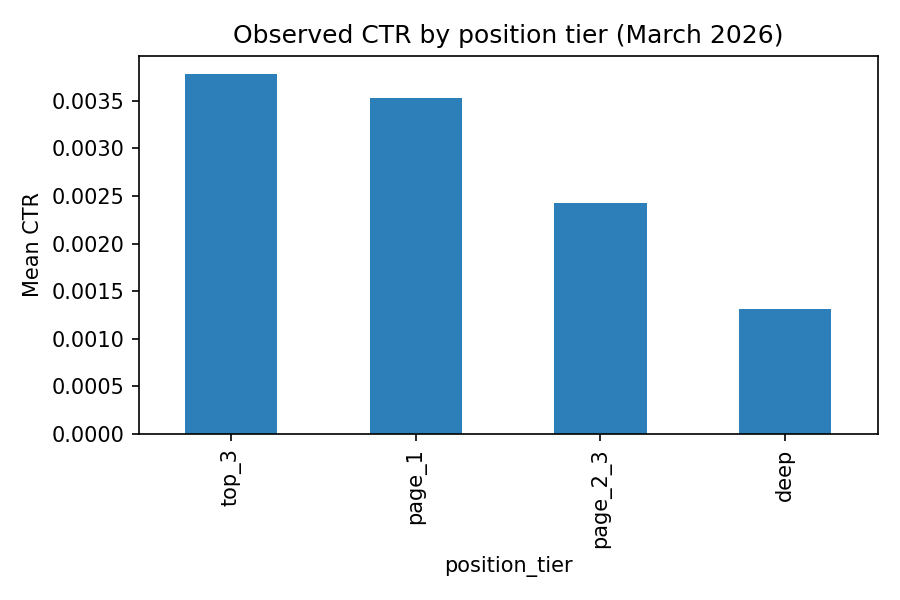
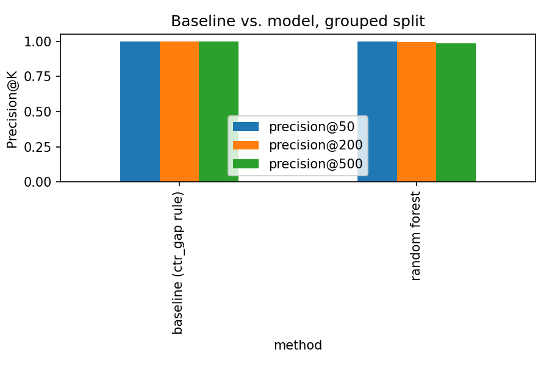

CTR opportunity study March 2026
Clickthrough rate falls sharply the further a page sits from position one the question this study answers is whether it falls in the same way for every page, or whether some pages are underperforming even their own position.
Observed CTR by position tier, March 2026, the cliff this whole study is built around.
abstract
Using a 132,471page slice of FlyRank's internship searchperformance warehouse, I built a transparent baseline rule that ranks pages by how far their CTR sits below their own position tier's average, and compared it against a trained Random Forest under an honest, clientgrouped validation split. The baseline performed at least as well as, and slightly better than, the trained model at larger ranking depths. This paper reports a ranked, decisionsupport action queue for content reviewers, built on the baseline rule, along with its explicit limits.
A content reviewer with limited time cannot manually check every page in a large site. They need a ranked list: which pages, out of thousands, are most worth reviewing first for a possible clickthrough problem?
A naive approach, flagging any page under a fixed CTR threshold, fails immediately, because CTR mechanically drops with search position, as the ladder above shows. A page in position 20 will almost always have lower CTR than a page in position 2, regardless of its actual quality. The real question is comparative: is this page underperforming relative to its peers at the same position?
This study uses the FlyRank internshipwarehouse dataset (build v20260703), specifically the fact_content_daily_performance table (pageday grain) joined to dim_content (content metadata). The working window is March 2026 a midpanel month, deliberately not the final month in the dataset, which is reserved as a sealed test window and is the natural outcome period for any pasttofuture label.
After filtering to pages with at least 20 impressions (needed to avoid a degenerate, mostlyzero CTR distribution found during data preparation), the working set is 132,471 pages.
Excluded, and why
trend_direction, trend_pct not present in this table, and would be leakage traps (derived from the same outcome being ranked) if they were.A page's expected CTR is judged relative to its own position tier, not as a flat number the ladder above confirms why: CTR ranges from roughly 0.38% in the top3 positions down to 0.13% for deep results, a real and wellsupported spread across thousands of pages per tier.
gsc_avg_position, gsc_impressions, word_count, content_age_days all knowable before the decision moment, none derived from the label.ctr_underperformer_for_tier a transparent rule scoring each page by how far its CTR sits below its own position tier's average. Pages at exactly 0% CTR despite strong position and real traffic are flagged separately, for a tracking check before a content fix.
| method | p@50 | p@200 | p@500 | base rate |
|---|---|---|---|---|
| Baseline rule | 1.000 | 1.000 | 1.000 | 0.470.50 |
| Random Forest | 1.000 | 0.995 | 0.9780.984 | 0.470.50 |

At small K, both methods tie at a perfect score an artifact of testset size, not a meaningful result. At K=200 and K=500, a real gap appears: the baseline stays perfect while the trained model slips slightly. The model's top feature by permutation importance is impression volume, consistent with the baseline's own use of volume as a tiebreaker the two methods are, in effect, leaning on similar signal, just packaged differently.
Verdict: the simpler, transparent baseline is the recommended mechanism complexity did not earn its place here.
The action queue ranks 50,752 visible, wellpositioned, underperforming pages, each carrying a reason code and one of two actions.
43,449 pages
Review the page's title, meta description, or snippet for a possible clickthrough improvement.
7,303 pages
Pages with exactly 0% CTR despite strong position and real traffic check analytics or tracking setup before assuming a content problem.
No page should be autoedited or autopublished from this list. No page should be removed or deindexed based on this queue alone exclusion from the queue reflects the filters used to build it, not a judgment that a page is worthless.
Full code, notebooks, and data contract live in the project repository: github.com/UroojBaloch/FlyRankMLinternship. The capstone notebook (work/notebooks/capstone.ipynb) reproduces every table and figure in this paper; random seeds are fixed at 42 throughout model training and splitting.
Built on the FlyRank ML Internship dataset flyrank.ai. Data accessed via the FlyRank internshipwarehouse release on Hugging Face, part of the FlyRank AI/ML Engineering Internship program.